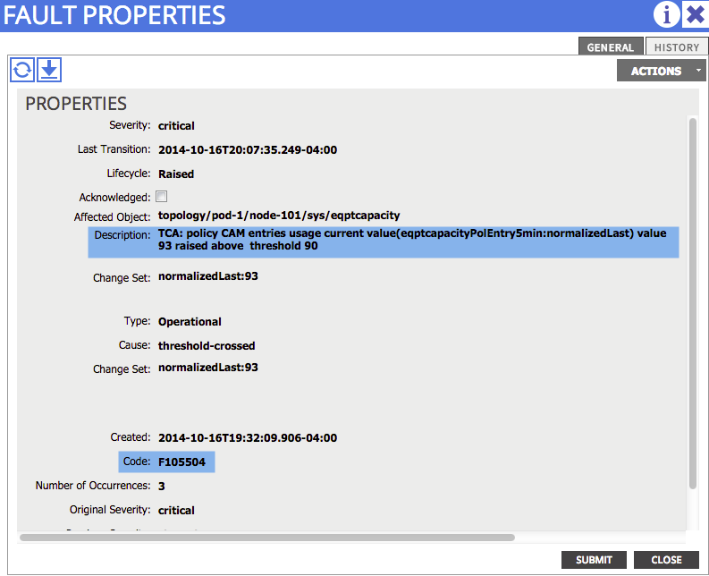

Policies and Contracts¶
Overview¶
Within the ACI abstraction model, Contracts are objects built to represent the communications allowed or denied between objects, such as EPGs. In order to resolve and configure the infrastructure, the contract objects get resolved into Zoning Rules on the fabric nodes. Zoning Rules are the ACI equivalent of Access Control Lists in traditional infrastructure terms. This chapter provides an overview and some troubleshooting topics related to the Zoning-Rules Policy Control in the ACI fabric. The ACI zoning-rule policy architecture consists of 4 main components, Policy Manager, ACLQOS, Filter and Filter Entries, Scopes and classIDs as described below.
Policy Manager
- Policy Manager is a supervisor component that processes objectStore notifications when Data Management Engine (DME)/Policy Element (PE) pushes zoning configuration to a leaf.
- Policy Manager uses the PPF (Policy Propagation Facility) library to push configuration to the linecards.
- Policy Manager follows an atomic “verify/commit” model where lack of hardware resources will cause a failure in the verify ‘stage’ of the process.
- Sets operational state as “Enabled” or “Disabled”
ACLQOS
- ACLQOS is a linecard component that receives the PPF configuration from the supervisor.
- This component is responsible for programming the hardware resources (Ternary Content Addressable Memory - TCAM) on the linecards on the leafs.
Filters and Filter Entries
- Filters act as containers for the filter entries
- Filter entries specify the Layer 4 (L4) information
Scopes and classIDs
- Each Context (VRF) uses a specific scope identified by “scopeID”
- “actrlRules” and “mgmtRules” are children that exist under a given scope
- EPGs are identified by the classID or PcTag.
- Rules are specified in terms of scope, source class ID, dest class ID and the filter
- The actrlRules exist only on leafs, while actrl.MgmtRules exist on both leaf and spine switches.
At a very high level, the interaction of the components on the APIC and leaf for policy can be summarized as follows
- Policy Manager on APIC communicates with Policy Element Manager on the leaf
- Policy Element Manager on the leaf programs the Object Store on the leaf
- Policy Manager on the leaf communicates with ACLQOS client on the leaf
- ACLQOS client programs the hardware
Verification of Zoning Policies¶
Zoning rules on the leaf can either be displayed directly on the leaf using CLI, or through the GUI on the APIC. The zoning policies that were examined as part of this chapter were configured as part of the below reference topology.
{kind=link}
The following CLI command can be used to display the zoning rules configured on the switch. This provides several key pieces of information when troubleshooting zoning rule policies. The Rule ID, SrcEPG/DstEPG, FilterID, and Scope can be used in future displays.
rtp_leaf1# show zoning-rule
Rule ID SrcEPG DstEPG FilterID operSt Scope Action
======= ====== ====== ======== ====== ===== ======
4096 0 0 implicit enabled 16777200 deny,log
4106 0 0 implicit enabled 2523136 deny,log
4107 0 16386 implicit enabled 2523136 deny,log
4147 0 32773 implicit enabled 2523136 permit
4148 0 16388 implicit enabled 2523136 permit
4149 0 32774 implicit enabled 2523136 permit
4150 0 16393 implicit enabled 2523136 permit
4151 0 32770 implicit enabled 2523136 permit
4152 16400 16391 17 enabled 2523136 permit
4153 16391 16400 17 enabled 2523136 permit
4154 16400 16391 18 enabled 2523136 permit
4155 16391 16400 18 enabled 2523136 permit
4097 16398 16394 default enabled 2523136 permit
4112 16394 16398 default enabled 2523136 permit
4120 16398 16399 default enabled 2523136 permit
4121 16399 16398 default enabled 2523136 permit
4126 16389 16387 default enabled 2523136 permit
4127 16387 16389 default enabled 2523136 permit
4128 16389 16401 default enabled 2523136 permit
4129 16401 16389 default enabled 2523136 permit
4130 16387 16401 default enabled 2523136 permit
4131 16401 16387 default enabled 2523136 permit
4117 0 0 implicit enabled 2457600 deny,log
4118 0 0 implicit enabled 2883584 deny,log
4119 0 32770 implicit enabled 2883584 deny,log
As is evidenced by the above output, even in a small test fabric, a number of rules are installed. In order to identify which Rule IDs apply to which configured contexts and EPGs, it is necessary to first identify the scope for the configured context. This can be done by using Visore to search for the configured context on the APIC using the Distinguish Name (DN) “fvCtx”. Once all the contexts are displayed, search on the specific context that is configured, and identify the scope for that context.
{kind=link}
The scope information is circled below. This is important as it will be used in future displays to verify the contract/policy has been pushed to the leaf.
{kind=link}
Notice that the scope identified in the above capture (2523136) matches the scope that appears in the show zoning-rule output displayed and highlighted below.
rtp_leaf1# show zoning-rule
Rule ID SrcEPG DstEPG FilterID operSt Scope Action
======= ====== ====== ======== ====== ===== ======
4096 0 0 implicit enabled 16777200 deny,log
4106 0 0 implicit enabled 2523136 deny,log
4107 0 16386 implicit enabled 2523136 deny,log
4147 0 32773 implicit enabled 2523136 permit
4148 0 16388 implicit enabled 2523136 permit
4149 0 32774 implicit enabled 2523136 permit
4150 0 16393 implicit enabled 2523136 permit
4151 0 32770 implicit enabled 2523136 permit
4152 16400 16391 17 enabled 2523136 permit
4153 16391 16400 17 enabled 2523136 permit
4154 16400 16391 18 enabled 2523136 permit
4155 16391 16400 18 enabled 2523136 permit
4097 16398 16394 default enabled 2523136 permit
4112 16394 16398 default enabled 2523136 permit
4120 16398 16399 default enabled 2523136 permit
4121 16399 16398 default enabled 2523136 permit
4122 32772 16387 default enabled 2523136 permit
4123 16387 32772 default enabled 2523136 permit
4124 32772 16389 default enabled 2523136 permit
4125 16389 32772 default enabled 2523136 permit
4126 16389 16387 default enabled 2523136 permit
4127 16387 16389 default enabled 2523136 permit
4117 0 0 implicit enabled 2457600 deny,log
4118 0 0 implicit enabled 2883584 deny,log
4119 0 32770 implicit enabled 2883584 deny,log
Once the Scope ID information has been identified, as well as the rule and filter IDs, the following command can be used to verify what Rule IDs and filters are being used for the scope previously identified. From the below display it can be seen that rule 4149 with source any (s-any) and destination (d-32774) is being used.
rtp_leaf1# show system internal policy-mgr stats | grep 2523136
Rule (4097) DN (sys/actrl/scope-2523136/rule-2523136-s-16398-d-16394-f-default) Ingress: 206, Egress: 0
Rule (4106) DN (sys/actrl/scope-2523136/rule-2523136-s-any-d-any-f-implicit) Ingress: 35, Egress: 0
[snip]
Rule (4148) DN (sys/actrl/scope-2523136/rule-2523136-s-any-d-16388-f-implicit) Ingress: 9, Egress: 0
Rule (4149) DN (sys/actrl/scope-2523136/rule-2523136-s-any-d-32774-f-implicit) Ingress: 8925, Egress: 0
Rule (4150) DN (sys/actrl/scope-2523136/rule-2523136-s-any-d-16393-f-implicit) Ingress: 30, Egress: 4
[snip]
rtp_leaf1# show system internal policy-mgr stats | grep 2523136
Rule (4097) DN (sys/actrl/scope-2523136/rule-2523136-s-16398-d-16394-f-default) Ingress: 206, Egress: 0
Rule (4106) DN (sys/actrl/scope-2523136/rule-2523136-s-any-d-any-f-implicit) Ingress: 35, Egress: 0
[snip]
Rule (4148) DN (sys/actrl/scope-2523136/rule-2523136-s-any-d-16388-f-implicit) Ingress: 9, Egress: 0
Rule (4149) DN (sys/actrl/scope-2523136/rule-2523136-s-any-d-32774-f-implicit) Ingress: 8935, Egress: 0
Rule (4150) DN (sys/actrl/scope-2523136/rule-2523136-s-any-d-16393-f-implicit) Ingress: 30, Egress: 4
[snip]
Is this the rule id that is expected to be incrementing? If so another very useful command is the show system internal aclqos zoning-rules display. Use of this command will require the direction of Cisco TAC’s, but this command provides for a confirmation that hardware on the leaf has been programmed correctly.
The Source EPG and Destination EPG combination of interest is (0 and 32774). Next step is to identify all the hardware entries for these source and destination classes that match the rule IDs in question (4149). The rules are numbered sequentially. The rule ID of interest is highlighted below. It can be observed that a hardware index (hw_index) of 150 and 151 is there which indicates that there is a hardware entry for this rule.
module-1# show system internal aclqos zoning-rules
===========================================
Rule ID: 1 Scope 4 Src EPG: 0 Dst EPG: 16386 Filter 65534
Curr TCAM resource:
=============================
unit_id: 0
=== Region priority: 2307 (rule prio: 9 entry: 3)===
sw_index = 23 | hw_index = 132
=== Region priority: 2307 (rule prio: 9 entry: 3)===
sw_index = 24 | hw_index = 133
[snip]
Dumping the hardware entry and examining the accuracy of the content is beyond the scope of this book, but at this point there is sufficient information to contact the Cisco Technical Assistance Center (TAC) if there is a zoning rule but no corresponding hardware entry.
===========================================
Rule ID: 4149 Scope 4 Src EPG: 0 Dst EPG: 32774 Filter 65534
Curr TCAM resource:
=============================
unit_id: 0
=== Region priority: 2311 (rule prio: 9 entry: 7)===
sw_index = 38 | hw_index = 150
=== Region priority: 2311 (rule prio: 9 entry: 7)===
sw_index = 39 | hw_index = 151
The GUI can also be used to verify contracts/zoning-rules. All the rules on the leaf can be examined as shown below. By going to Fabric->Inventory->Rules. Then double click on a particular rule of interest.
{kind=link}
The existing policy state can be verified using the GUI. Remember in the overview section it was the responsibility of Policy Manager to set the operation state of the rule. In the below display it can be verified if the operational state is disabled or enabled, whether the action is permit or deny, and the direction of the rule.
{kind=link}
The statistics for each rule can also be examined to make a determination that the rule is being used. This was demonstrated earlier using the CLI. Click on stats, and then the check mark as shown below to view stats in the GUI.
{kind=link}
Select the packet counters of interest and the sampling interval to be monitored.
{kind=link}
If the health score for that specific rule is not 100, its health status can be further drilled down upon. This provides insight as to what problems may be occurring. Running out of hardware resources is just one factor that can cause the health score to decrease. The use of Health Score as an aid in troubleshooting is covered in more detail in the Health Score/Faults specific chapter.
{kind=link}
Faults that have been generated as a direct result of this rule being applied to the leaf can also be analyzed. This is one of the most important items to check when troubleshooting zoning-rules, or any other ACI policy. The use of Health Score as an aid in troubleshooting is covered in more detail in the Health Score/Faults specific chapter.
{kind=link}
Problem Description¶
Some of the Policy Zoning Rules problems that can be encountered during the ACI deployment process include, but are not limited to, the items below. The commands already shown in the verification section above can be used to help identify the problems below.
Verification¶
Check the GUI to see if any faults were generated if the rule/contract was recently removed Verify in the GUI that the rule does not exist after identifying the scope for the context Verify with show zoning-rules CLI command that the rule does not exist Verify in Visore that the rule does not exist on the APIC For example using the following highlighted Rule Id:
rtp_leaf1# show zoning-rule
Rule ID SrcEPG DstEPG FilterID operSt Scope Action
======= ====== ====== ======== ====== ===== ======
4096 0 0 implicit enabled 16777200 deny,log
[snip]
4130 16388 32775 25 enabled 2523136 permit
4131 32775 16388 21 enabled 2523136 permit
Visore can be used to verify the rule is there or not by searching “actrlRule” and filtering on the rule id as shown below.
{kind=link}
Visore can also be used to search on a specific filter (actrlFlt). It can be seen that the rule exists in this case, and is applied to node 101 or leaf1.
{kind=link}
It can be verified that the filter entries are correct by drilling down on the arrows as shown below.
{kind=link}
{kind=link}
Statistics can also be checked directly from Visore as shown below.
{kind=link}
{kind=link}
- Verify using the commands in the verification section that the leaf does not have a hardware entry for that rule.
Resolution¶
If a rule (contract) is found to be configured, remove it to block communication between the EPGs. If there is no rule configured, or the rule is unable to be verified, contact the Cisco Technical Assistance Center for help in diagnosing the problem.
Verification¶
As shown in the previous verification steps:
- Check the GUI for faults associated to the rule in question
- Verify in the GUI that the operational state is enabled
- Verify with show zoning-rules CLI command that the rule exists after identifing the scope for the context
- Verify in the GUI or CLI that the rule entry counters are incrementing
- Verify the health score for that rule
- Verify in Visore that the rule exists (See above)
- Verify there is a corresponding hardware entry for that rule id in the CLI
Resolution¶
If a rule (contract) is found to be configured, contains the proper filter content (ports), and is found to have a corresponding hardware entry then check for forwarding problems. If further assistance is required contact the Cisco Technical Assistance Center for help in diagnosing the problem.
Verification¶
Check the GUI for faults associated to the rule in question.
This will be Fault F1203 - Rule failed due to hardware programming error.
{kind=link}
{kind=link}
The following fault will be observed: Fault F105504 - TCA: policy CAM entries usage current value(eqptcapacityPolEntry5min:normalizedLast) value 93 raised above threshold 90
This fault will be generated on the leaf.
{kind=link}
- Verify with show zoning-rules CLI command that the rule exists after identifying the scope for the context
- Verfiy the health score for that rule
Resolution¶
Reduce the amount of zoning rules (contracts) required. Explore the option of using “vzAny”, as well as any other contract optimization techniques. Contact the Cisco TAC if further assistance is required.
Verification¶
As shown in the previous verification steps:
- Check the GUI for faults associated to the rule in question
- Verify in the GUI that the operational state is enabled
- Verify in Visore that the rule exists (See above)
- Verify with show zoning-rules CLI command that the rule exists after identifying the scope for the context
- Verify using the commands in the verification section that the leaf has a hardware entry for the rule
Resolution¶
If a rule (contract) is present in the GUI and Visore, does not exist on the leaf, and there are no corresponding faults for the policy that is being deployed, contact the Cisco Technical Assistance Center for help in diagnosing the problem. Otherwise correct the configuration that is causing the fault and redeploy the policy.